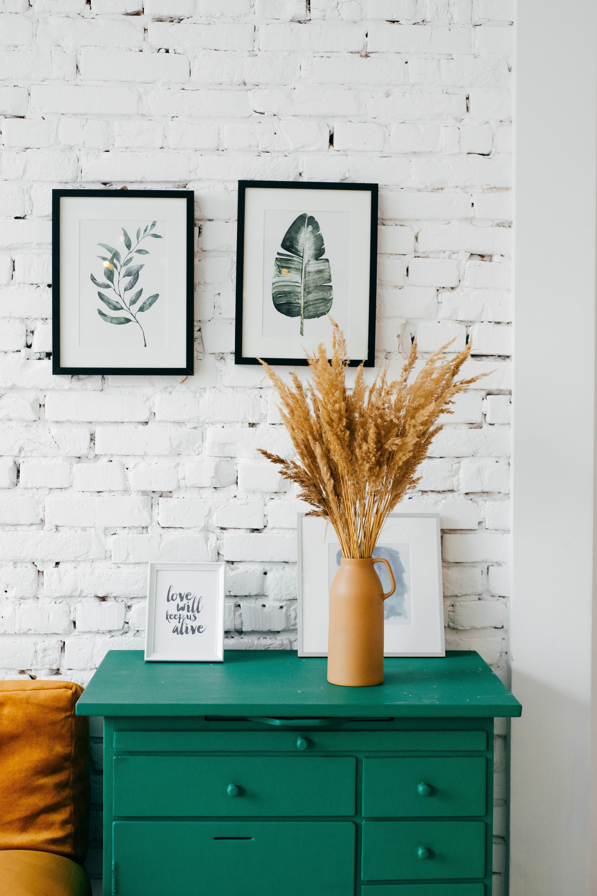

팬데믹 등 비대면 환경이 증가 --> 온라인을 통한 미술 작품의 전시와 가치 제공을 통해 양방향 커뮤니티를 조성하여, 현재 미술 작품에 대한 불공정한 정보의 접근을 투명하고 공정한 접근이 가능한 플랫폼으로 조성.
Covid-19 등 팬데믹(pandemic)으로 인한 소비 시장의 변화 : 비대면과 온라인
- 집에 머무는 시간이 증가하면서, 집에서 편하게 전시를 관람하고 미술 관련 정보와
감상을 공유하고 싶은 요구도 증대.
- 사람이 많이 모이는 전시장이나 아트페어 등이 기피되면서 온라인으로 작품 구매.